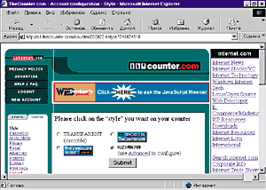
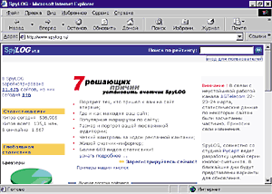
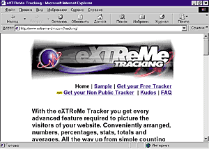
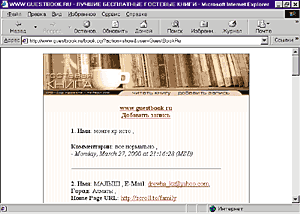
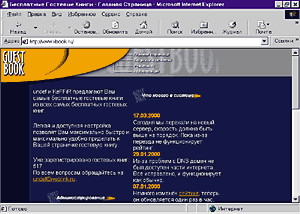
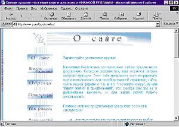
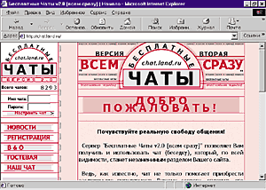
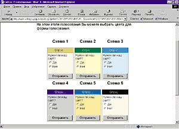
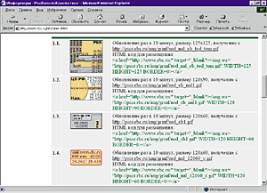

Все, что нужно вашей web-страничке
Дмитрий Шипилов
Вы - создатель своей собственной домашней Web-странички. Как только вы ее
завершили, присмотритесь: чего там не хватает? Возможно, счетчика посетителей?
Или гостевой книги? Давайте разберемся, как можно оптимизировать свой сайт,
сделать его "живым" и интересным для посетителей.
Дополнительные услуги типа гостевых книг, счетчиков или чатов требуют
сохранения данных на сервере, например того же числа посетителей. Язык HTML
вкупе с JavaScript из соображений безопасности лишен возможности чтения и записи
каких-либо данных на накопителях информации (исключая доступ к cookies). Для
осуществления подобных действий необходимо написание специальных
программ-сценариев на одном из предназначенных для этого языков, например Perl.
Помимо того, что вам придется освоить данный язык, будет необходимо найти
бесплатный сервер, который разрешит осуществление записи на его дисковое
пространство. А это, опять же с целью соблюдения электронной безопасности,
позволяет далеко не каждый ресурс.
Выход в подобной ситуации - найти сайты, создатели которых уже написали за
вас все необходимые программы и предоставляют абсолютно бесплатно услуги
счетчиков, гостевых книг, форумов и других приятных дополнений к элементарной
Web-страничке. Достаточно только зарегистрироваться на одном из таких серверов
(о них, кстати, и пойдет речь в данной статье), осуществить необходимую
начальную настройку, после чего получить код HTML, который надо разместить на
вашей страничке для активации услуги, и все! Итак, расскажем по порядку.
Счетчики
Самое первое, что надо добавить на свою страничку, - это счетчик посетителей.
С его помощью легко узнать, сколько народу побывало на вашем сайте. Простейшие
счетчики запоминают только число посещений странички. Более сложные подсчитывают
и точное количество уникальных пользователей. Ну а самые серьезные счетчики и
совмещают в себе функции трэкеров, о которых пойдет речь ниже, и собирают
дополнительную информацию о посетителях.
Счетчики, как правило, выглядят довольно разнообразно: большинство
представляют собой изображение с числом посетителей, выполненное в определенном
стиле, который обычно можно подобрать для максимального соответствия тематике
сайта. Следует, однако, помнить, что излишне большие картинки с числом
посетителей будут дольше грузиться и многие могут даже не дождаться конца
операции. Аналогом счетчиков-изображений являются текстовые счетчики, созданные
на языке сценариев (обычно это JavaScript). Они загружаются гораздо быстрее, и
их можно полностью сконфигурировать под оформление вашей странички.
Для создания счетчика необходимо зарегистрировать его на одном из серверов,
предоставляющих подобную услугу. При этом следует указать адрес вашей странички,
а также, обычно, контактный e-mail. Некоторые серверы могут отправлять на
указанный электронный почтовый ящик регулярную статистику по посещениям вашего
сайта. Далее вам надо выбрать внешний вид счетчика. Для счетчиков-изображений
предоставляется на выбор целый список стилей, для текстовых же обычно
предлагается указать шрифт, размер и цвет текста. Помимо этого одним из
атрибутов счетчика является количество цифр.
Трэкер - это расширенный вариант счетчика, предназначенный для сбора
информации о посетителях вашей странички. Среди сведений, собираемых трэкерами,-
имя и версия используемого броузера, операционная система, под управлением
которой работает компьютер посетителя, разрешение экрана и глубина цвета,
информация о том, разрешено ли пользователем применение языков сценариев и др.
Также можно определить географическое расположение посетителя (регион), время
посещения и некоторые другие персональные, но не конфиденциальные сведения.
Сбор таких данных крайне полезен для создателей Web-страничек. Определяя
характеристики аудитории своего сайта, разработчик корректирует направление его
развития. К примеру, если у 99% посетителей установлен Microsoft Internet
Explorer, то дизайнер может использовать некоторые уникальные особенности MS IE.
Или если его сайт в основном посещается российскими пользователями Internet, то
разработчик может задуматься над "продвижением" странички для зарубежной
аудитории.
Как и при добавлении счетчика, для сбора данных на свой сайт необходимо
поместить определенный HTML-код, обычно на заглавную страницу. Визуально трэкер,
как правило, представляет собой изображение с логотипом сервера, оказывающего
вам соответствующую услугу. Необходимая информация собирается как при загрузке
данного логотипа, так и при помощи определенного сценария, размещаемого на вашей
страничке.
Одним из самых удобных и мощных серверов, предлагающих счетчики, является http://www.thecounter.com/.
Он предоставляет услуги по созданию как текстового, так и графического счетчика
посетителей страницы. Вы можете выбрать один из шрифтов, а также указать цвет
текста и фона. Отдельным вариантом является невидимый счетчик, который не
отображается "в открытую", и результаты количества посещений в этом случае
доступны только владельцу. Подобный вариант удобен для определения популярности
не сайта в целом, а, например, его отдельного раздела. При этом совсем
необязательно информировать пользователя о том, что он "N-й посетитель".

Выбираем внешний вид счетчика на сервере TheCounter.com.
Счетчик от TheCounter.com удобен не только своими обширными настройками и
небольшими размерами. В нем предусмотрены функции сбора информации о
посетителях, результаты которого будут представлены на сайте в виде графиков и
числовых значений. Используя этот универсальный счетчик, вы сокращаете время
загрузки вашей страницы. Если же применять простой счетчик от одного сервера, а
трэкер от другого, то броузеру придется последовательно обратиться к этим двум
серверам, вместо одного при использовании счетчика-трэкера с http://www.thecounter.com/.
Во втором случае, естественно, увеличивается время, необходимое для отображения
страницы.

Главная страница сайта http://www.spylog.ru/. Здесь вам
подробно объяснят, почему надо установить именно SpyLog.
Отечественный сайт http://www.spylog.ru/ тоже предоставляет услуги по установке
счетчика-трэкера на страницах вашего сайта. Разместив у себя SpyLog, вы будете
получать самую точную и подробную информацию о ваших посетителях. За
использование SpyLog говорит тот факт, что его можно найти на многих
отечественных сайтах: в системе зарегистрировано большое количество ресурсов,
преимущественно российских. Счетчик-трэкер от SpyLog позволяет увидеть не только
общую картинку посещаемости, но и получить информацию о том, сколько посетителей
присутствует на сайте на данный момент (так называемый динамический счетчик).
Предлагается до 600 видов статистики, по которой можно анализировать
посещаемость вашей странички. Благодаря данному трэкеру даже опредяется, с каких
сайтов происходит переход на ваши страницы.
Вообще говоря, возможности, предоставляемые SpyLog, во многом уникальны.
Помимо счетчика, устанавливаемого на главной странице вашего сайта, вы можете
разместить дополнительных "наблюдателей" на различных разделах страничек, а
сведения будут стекаться к основному трэкеру и там же обрабатываться. Ну а позже
отобразится статистика по читаемости разделов вашей Web-странички. Визуально
сервер предоставляет несколько вариантов внешнего вида счетчика SpyLog.
Существует и развернутый вариант счетчика, на котором видна дополнительная
статистическая информация о посетителях сайта.
Кроме перечисленных услуг, на сервере SpyLog ведется рейтинг среди членов
каталога сайтов, в который автоматически заносится и зарегистрированная вами
домашняя страничка.
Простой, но предоставляющий все необходимые возможности трэкер располагается
на сервере http://www.extreme-dm.com/. Его, к сожалению, нельзя применять
в качестве счетчика посещений, поскольку изображение, выводимое при сборе
информации, не содержит данных о посещениях сайта и является лишь логотипом этой
трэкерной системы. Всю необходимую информацию как владелец трэкера, так и
посетитель сайта может получить, перейдя по определенной ссылке на страницу
сервера http://www.extreme-dm.ru/. Объем сведений, собираемых о
посетителях, аналогичен трэкерам от других серверов и включает в себя как
основные данные о машине пользователя (операционная система, броузер, разрешение
и объем цветовой палитры), так и некоторые географические - домен, страну и
континент. Как и SpyLog, трэкер от http://www.extreme-dm.com/ ведет статистику и уникальных
посещений, и общее количество зашедших "к вам". Помимо всего этого производится
отслеживание, откуда пользователь перешел на ваши странички.

Заглавная страница сервера http://www.extreme-dm.com/.
Установите трэкер и получите полный контроль за посещаемостью вашей
Web-странички!
Трэкер http://www.extreme-dm.com/, пожалуй, незаменимое дополнение к
уже установленному на сайте счетчику (если последний не поддерживает
отслеживание статистики), и его применение вполне обосновано, если вам по
каким-нибудь причинам не подходит трэкер от SpyLog или универсальный
счетчик/трэкер от TheCounter.com.
Гостевые книги
Гостевые книги являются признаком "хорошего тона" для любого претендующего на
популярность сайта. При их помощи посетители смогут оставить вам какое-нибудь
сообщение или комментарий относительно содержимого вашей странички. Чем же они
лучше отправки обычного электронного письма Web-мастеру? Во-первых, отвечая на
чей-нибудь вопрос в гостевой книге, вы избавляете других посетителей от
необходимости задавать аналогичные вопросы. Во-вторых, отнюдь не у всех есть
доступ к электронной почте (например, на работе) для того, чтобы отправить вам
сообщение.
Серверов, предоставляющих возможность использования гостевых книг, немало.
Но, как правило, предлагаемый "товар" имеет жесткий, заранее заготовленный и
неизменяемый дизайн, очень часто несовместимый с дизайном вашей странички.
Помимо этого, создатели гостевых книг очень любят размещать в теле книги
рекламные баннеры. С этим придется смириться, если только не попытаться написать
свой собственный сценарий.
Один из наиболее доступных и простых серверов гостевых книг расположен по
вполне логичному адресу http://www.guestbook.ru/. Как и на множестве других, на данном
сервере для настройки "под себя" доступны основные технические параметры книг -
количество сообщений на одной странице, изображения, располагаемые в начале и в
конце страницы, цвета сообщений, язык интерфейса (английский или русский). Для
полного соответствия дизайну вашего сайта можно заменить стандартные фразы,
приглашающие оставить запись в гостевой книге, а также применить на странице
вашу собственную таблицу стилей CSS (но для того, чтобы в полной мере
воспользоваться этим свойством, вам необходимо знать основы CSS). Дополнительная
возможность - указание обязательных для заполнения персональных полей (таких,
как имя, e-mail, город и страна проживания, домашняя страничка и др.).
Использование гостевых книг от http://www.guestbook.ru/ является наиболее простым и очевидным
решением для начинающих Web-дизайнеров.

Вот так выглядят гостевые книги сервера http://www.guestbook.ru/.
Еще один сервер несложных гостевых книг располагается по адресу http://www.xbook.ru/. Приятный
дизайн, крайне простая регистрация и, к сожалению, столь же простые и жесткие
функции по изменению оформления книги. В число настроек входит количество
записей на одной странице, цвета сообщений, имя ответчика. Дополнительно можно
ввести HTML-код верхней и нижней частей гостевой книги, что расширяет в
сравнении с предыдущим сервером http://www.guestbook.ru/ возможности настроек оформления.
Сообщения, вносимые в книгу, могут автоматически отправляться на указанный
электронный адрес. Это избавляет владельца от регулярного посещения гостевой
книги и ее просмотра. Отличительной особенностью книг от http://www.xbook.ru/ стало
дополнительное поле в форме добавления сообщений. Автор может указать свой номер
ICQ, и при просмотре гостевой книги рядом с его именем будет отображаться
текущий ICQ-статус (онлайн или оффлайн).

Перед вами сервер http://www.xbook.ru/. Дизайн не ахти какой, да и предлагаемые
гостевые книги не отличаются разнообразием настроек.
Наиболее удобные и близкие к совершенству гостевые книги находятся на сервере
http://www.guestbook.net.ru/. Они отличаются обширными
возможностями настроек - пожалуй, это единственные гостевые книги, дизайн
которых делается соответствующим общему оформлению сайта, без написания своего
собственного сценария. Есть два варианта базовых настроек. Во-первых, форму для
добавления сообщения можно размещать на отдельной страничке, ссылка на которую
будет расположена в начале гостевой книги. Ну а второй вариант - текст сообщений
и области для добавления сообщений находятся на одной страничке. Сервер
предоставляет выбор языка - русский или английский, количества сообщений,
располагаемых на одной странице, и фильтра на нецензурные слова (которые вы сами
задаете - вот здорово-то!). Помимо этого вы можете сами сочинить ряд фраз,
заголовки, приглашающие посетителя участвовать в обмене мнениями.

Сервер http://www.guestbook.net.ru/ предоставляет самые настраиваемые
и многофункциональные гостевые книги.
Опционально указывается доступность функции комментирования сообщений книги.
При этом возле каждого сообщения будут ссылки на добавление комментария. Для
удобства восприятия они отображаются другим цветом и сдвинуты относительно
текста основного сообщения. Разрешив описанную функцию, вы можете проводить
целые дискуссии по определенным вопросам, превращая вашу гостевую книгу в нечто
большее - так называемый форум.
Форумы представляют собой расширенный аналог гостевых книг. Чем-то они близки
к телеконференциям. Также как и в гостевых книгах, вы можете оставлять сообщения
по какой-нибудь определенной теме, которую вы задаете отдельной строкой.
Читателям форума разрешено добавлять замечания к сообщению или к уже
существующему комментарию, создавая своеобразную дискуссионную "цепочку".
Подобным образом можно проводить обсуждения интересных вопросов, которые
зачастую перерастают в огромную дискуссию, не уступающую по объемам
конференциям. Некоторые серверы помимо темы позволяют графически отображать
эмоциональную окраску вашего сообщения - отрицательную, гневную или, например,
заговорщицкую.
Чаты
При создании Web-странички никак нельзя обойти тему чатов. Нередко появляется
желание устраивать на сайтах массовые виртуальные встречи самых разных людей,
объединенных общими интересами. При этом часто не хочется пользоваться каким-то
"чужим" чатом (например, от http://www.chat.ru/), а мечтаешь иметь свой собственный,
расположенный на своей же домашней страничке. В такой ситуации может помочь
сервер бесплатных чатов chat.land.ru.

Сервер chat.land.ru, предоставляющий бесплатные чат-комнаты. Эти чаты
отличаются высокой скоростью благодаря размещению сервера на канале
М9.
Эти чаты отличаются удобством и простотой в использовании, а также высокой
скоростью, что обеспечивается размещением сервера chat.land.ru на канале M9. Помимо этого, предоставляется
большое количество настроек, позволяющих гармонично и эффектно вписать чат в
дизайн вашей Web-странички. Зарегистрировавшись, вы получите HTML-код,
расположив который на сайте, сразу же проверяете "свежеприобретенный" чат в
действии.
Опросы
Это еще одна услуга, которая, несомненно, заинтересует не только зашедших на
вашу страничку, но и собственно вас, дизайнера. Благодаря электронным опросам
легко узнавать мнения посетителей по интересующим темам и даже проводить
определенные социологические исследования.
Внешне все это выглядит как вопрос и несколько вариантов ответа. Пользователь
выбирает соответствующий и нажимает на кнопку отправки результата.
Сервер-обработчик опросов регистрирует голос, в большинстве случаев следя при
этом за его уникальностью (по IP-адресу отправителя). Некоторые серверы
позволяют сразу же отображать статистику ответов в виде графиков или цифровых
значений. "Горячим" примером использования электронных опросов могут служить
проведенные неофициальные сетевые голосования за президента России.
Темы для голосования могут быть самые разные - от серьезных (какие-либо
политические опросы или варианты дальнейшего развития сайта) до чисто
символических (как, к примеру, назвать кота владельца Web-страницы).

Варианты расцветки формы голосования на http://www.voting.ru/.
Реализовать данный процесс голосования на вашей страничке достаточно просто:
всю работу возьмет на себя широко используемый в российском Internet сервер http://www.voting.ru/. При
регистрации необходимо указать заголовок голосования, сам вопрос и варианты
ответов (до десяти). Далее следует выбрать расцветку формы для голосования.
После произведенных действий сервер Voting.ru выдаст HTML-код для размещения на
вашей Web-страничке и уникальный идентификационный номер. Этот номер потом
используется для просмотра результатов и изменения технических параметров.
Единожды зарегистрировавшись на http://www.voting.ru/, вы впоследствии сможете просто менять
вопрос и варианты ответов, что избавит вас от перерегистрации при необходимости
узнать мнение аудитории вашего сайта по какому-нибудь другому вопросу.
Размещение информации с других сайтов
Еще одним интересным дополнением к вашей домашней страничке может служить
размещение информации, взятой с другого сайта. Это осуществляется с помощью так
называемых информеров. Примером может служить сайт "РосБизнесКонсалтинг" http://www.rbc.ru/. Он позволяет
отображать на вашей страничке много чего: курс доллара в Москве и
Санкт-Петербурге, динамику его роста, погоду в Москве и др. (например, во время
предвыборной гонки вы могли поместить на своем сайте рейтинг кандидатов в
президенты; ранее действовали информеры, сообщавшие о ценах на бензин в Москве).
Вполне возможно, что в ближайшем будущем сервер "РосБизнесКонсалтинг" увеличит
число своих информеров.
Для их применения достаточно поместить соответствующий HTML-код в нужном
месте вашей страницы, и посетитель всегда сможет узнать интересующие его
сведения. К примеру, если ваш сайт посвящен финансовой тематике, то данные о
курсе валют никогда не помешают. Обновление происходит раз в десять минут, так
что гарантирована постоянная актуальность сообщений.

Информеры, доступные на сайте "РосБизнесКонсалтинг"
http://www.rbc.ru/.
Помимо информеров, отображающих финансовую или политическую жизнь, сайт http://www.rbc.ru/ предоставляет
возможность разместить у вас на сайте бегущую строку с заголовками самых
последних новостей. Таким образом, посетитель вашей Web-странички будет в курсе
всех "горячих" событий. Щелкая мышью на определенном заголовке, пользователь
может переходить к чтению выбранного сообщения непосредственно на сайте
"РосБизнесКонсалтинг".
Всевозможные добавления к Web-ресурсам, которые реализуются с помощью
описанных специализированных серверов услуг, повышают функциональность и
привлекательность ваших домашних страничек. Согласитесь, что сайт без счетчика
посетителей или, например, гостевой книги выглядит незавершенным. Подобные
функции становятся стандартом или, как минимум, хорошим тоном на бескрайних
просторах Всемирной паутины. В данной статье, конечно, рассмотрено далеко не
все, что можно "прикрутить" к Web-страничке - число и возможности сервисов
растут с каждым днем. Нашей целью было обратить внимание на дополнения к дизайну
домашней странички и помочь выбрать наиболее интересные и полезные бесплатные
"примочки". А уж пользоваться ли ими - решать вам.